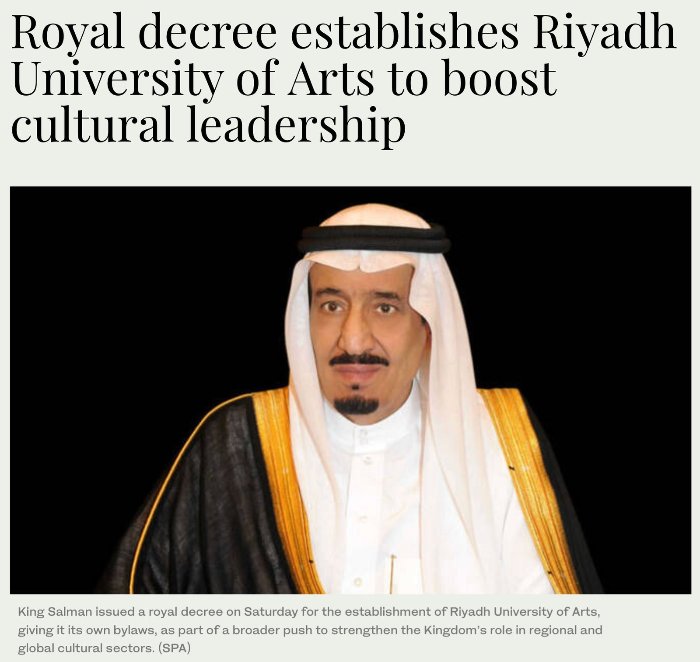

사우디아라비아가 2026년 3월 살만 빈 압둘아지즈 알사우드(King Salman bin Abdulaziz Al Saud) 국왕의 왕령으로 예술 분야 전문 고등교육기관인 리야드 예술대학교(Riyadh University of Arts, RUA) 설립을 공식화했다. 사우디는 이번 대학 설립을 통해 문화예술 분야 인재를 체계적으로 양성하고 문화 산업 기반도 확대할 계획이다. 바드르 빈 압둘라 빈 파르한(Prince Bader bin Abdullah bin Farhan) 문화부 장관은 앞서 2025년 문화투자 콘퍼런스에서 해당 계획을 발표하며 문화 교육 분야의 핵심 투자라고 밝혔다.

▲ 살만 빈 압둘아지즈 알사우드 국왕의 리야드 예술대학교 설립 승인 관련 보도 — 출처: 아랍뉴스(Arab News)
2026년 개교 목표 — 전 과정 예술 교육 체계 구축
리야드 예술대학교는 문화부 산하 독립 교육기관으로 운영되며, 리야드 이르카(Irqah) 지역에 조성되는 캠퍼스를 중심으로 설립이 추진되고 있다. 대학은 단기 과정부터 학사, 석사, 박사 과정까지 이어지는 교육 체계를 갖추고 예술·문화 분야 전반의 전문 인력을 양성할 예정이다. 개교 초기에는 음악대학, 영화대학, 공연예술 분야 중심으로 먼저 운영한다. 그 이후 건축과 디자인, 요리예술, 시각예술, 문화유산 연구, 문학, 문화경영, 예술경영, 패션 등으로 확대해 총 13개 단과대학 체제로 발전한다. 장학 제도도 함께 마련해 문화예술 인재를 지원할 계획이다.
글로벌 예술 교육기관과 협력
리야드 예술대학교는 해외 예술 교육기관과 협력해 교육과정을 운영한다. 공연예술 분야는 미국 에이엠디에이 공연예술대학(AMDA College of the Performing Arts), 영화 분야는 미국 서던캘리포니아대학교 영화예술대학(USC School of Cinematic Arts), 음악 분야는 영국 길드홀 음악연극학교(Guildhall School of Music & Drama), 문화경영 분야는 프랑스 에섹경영대학원(ESSEC Business School)과 협력한다. 사우디는 이들 기관과 함께 학위 과정과 연구, 문화교육 프로그램을 설계해 국제 수준의 예술 교육 체계를 빠르게 구축할 방침이다. 리야드 예술대학교는 세계 문화예술 분야 상위 50개 대학 진입을 목표로 한다.
문화 산업 성장과 인재 수요 대응
사우디 정부는 리야드 예술대학교 설립을 통해 문화 인재 양성 체계를 구축하고, 문화 산업을 국가 핵심 성장 분야로 육성하는 정책을 본격적으로 추진하고 있다. 이는 비전 2030을 기반으로 교육·산업·국제 협력을 연계한 문화 생태계 조성 전략이다. 사우디는 영화, 음악, 공연, 시각예술 등 문화 산업 전반을 새로운 성장 분야로 확대하고 있다. 사우디 문화부는 앞으로 10년 동안 문화 분야에서 약 30만 개의 일자리가 생길 것으로 내다봤다. 문화 인력 수요도 해마다 7%씩 늘어날 전망이다. 이에 따라 리야드 예술대학교는 2040년까지 2만 5,000명에서 3만 명의 졸업생을 배출하고, 1,000명에서 1,500명의 교원을 양성하는 목표를 세웠다. 문화 산업 규모도 2030년까지 약 800억 사우디 리얄(약 30조 원) 수준으로 확대될 것으로 예상된다.
최근 사우디에서는 디리야 컨템포러리 아트 비엔날레(Diriyah Contemporary Art Biennale), 투와이크 조각 심포지엄(Tuwaiq Sculpture Symposium), 레드씨 국제영화제(Red Sea International Film Festival) 등 대형 문화 프로젝트가 이어지며 문화 생태계가 빠르게 성장하고 있다. 다만 산업 성장 속도에 비해 전문 인력을 체계적으로 양성할 교육 기반은 아직 충분하지 않다. 리야드 예술대학교는 이러한 수요를 뒷받침하는 교육 기관으로 자리 잡는 데 중요한 역할을 할 것으로 보인다. 사우디는 대학 운영을 통해 자국 예술가와 문화 인력을 키우고, 중동 지역 문화예술 교육의 거점으로 도약하겠다는 목표를 제시했다.
사진출처 및 참고자료
≪아랍뉴스(Arab News)≫ (2026. 03. 14). Royal decree establishes Riyadh University of Arts to boost cultural leadership, arabnews.com
≪사우디 가제트(Saudi Gazette)≫ (2026. 03. 14). King Salman orders establishment of Riyadh University of Arts, saudigazette.com.sa
≪사우디 프레스 에이전시(Saudi Press Agency)≫ (2025. 09. 29). Culture Minister Announces the Riyadh University of Arts at the Cultural Investment Conference, spa.gov.sa
≪영국왕립예술대학(Royal College of Art)≫ (2026. 02. 02). Royal College of Art announces programme design partnership with new Riyadh University of Arts, rca.ac.uk